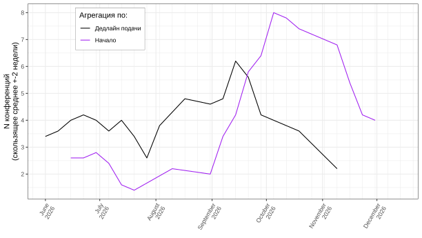
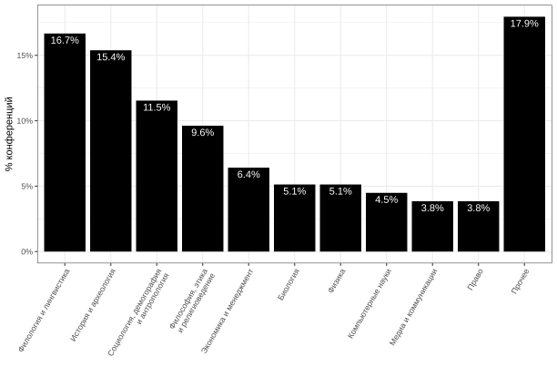
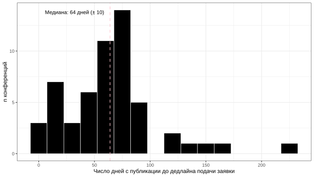
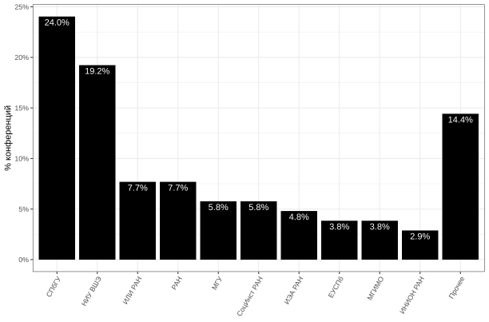

Датасет: dataset.csv — 90 конференций, обновлён 15.07.2026 в 15:58 по МСК. Формат: CSV (UTF-8), по строке на конференцию; многозначные поля (дисциплины, источники) разделены «;». Колонки: id, title, organizer, disciplines, event_start, event_end, submission_deadline, location, format, status, in_site (попала ли на сайт), first_seen (появление в базе), first_published (дата анонса, если известна), sources, source_urls, flags, official_url.



